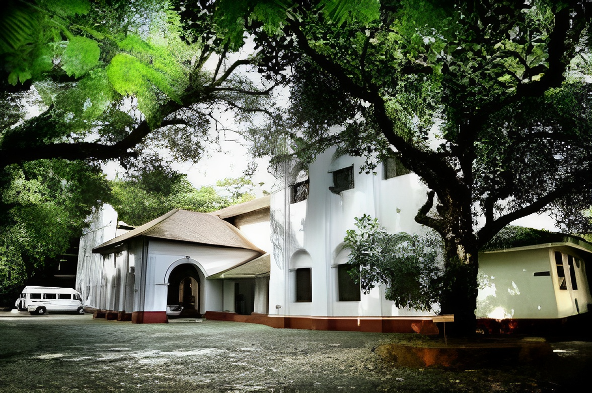

Kerala Sahitya Academi,
located in a sprawling bungalow in Thrissur, the academy was established in 1956 to promote Malayalam literature and the language.
An autonomous body, the Sahitya Academy recognizes superior literary works every year through its prestigious literary awards. The building houses a splendid picture gallery of Malayalam literatures.
The Academy was formally inaugurated on 15 October 1956 at Kanakakunn Palace, Thiruvananthapuram. The Maharaja of Travancore Shri.
Chithira Thirunal Balarama Varma inaugurated the event. In 1958, the headquarters of the Academy was shifted to Thrissur.
Sardar K.M. Panicker was the first president.
Awards
More Than 500 Peoples Achieved Their Awards Through This Institute
Published
More Than 800 Scripts And Literature were successfully Published
OUR VISION
The main objective of Kerala Sahitya Akademi is the growth and progress of Malayalam language and literature.
Various activities are being planned and implemented by the Academy for this purpose. The main activities of the Academy are as follows:
Translate masterpieces from Malayalam to other languages and from other languages to Malayalam.
Publish reference books such as literary history, bibliography, literary directory, encyclopedia, and best books for the development of language and literature.
Give awards for best literary works.
Conduct literary workshops
Conduct literary workshops for young writers and students.
To promote research in the field of language, literature and culture
To provide scholarship for study tour and writing to writers and to devise and implement programs to develop literary taste among people.
Assist in book publishing.
Help writers
The Academy has a very extensive publication department and exhibition-shop.
The Academy has already published many books that make valuable contributions to the Malayalam language and Kerala culture.
Books with low market potential and high research value are usually published. The Academy has devoted about four hundred books to the study of language and culture.
Sahitya Chakravalam (Magazine), Sahitya Lokam (Bimonthly) and Malayalam Literary
Survey (English Quarterly) are the periodicals published by the Academy and the services rendered by these in
the field of Malayalam literary studies are immense. Sahitya Loka and Malayalam Literary Survey are included in CARE list of recognized research journals of UGC.
The academy has a portrait gallery dedicated to the memory of the late writers, a cassette library with voice recordings of famous writers,
an air-conditioned room for storing palm leaf discs and a well-equipped auditorium. There is also a facility to record palm leaves and rare manuscripts etc. on CD.
The Kerala Sahitya Akademi Library is as old as the Academy itself, stocking the entire collection of books in Malayalam.
This library has a huge collection of books related to Malayalam language. The Kerala Sahitya Akademi Library is the only institution recognized as a Malayalam
research center by all the universities in Kerala. The Academy Library, which has become an elite research center for our literature and culture, is witnessing a
phenomenal increase in the number of book and non-book documents.
The number of researchers coming to the Academy Library from within and outside Kerala is increasing day by day.
Rare books, periodicals and documents which are perishing due to age are being preserved in digital form using modern technology.
A digital conservation lab has been set up in the academy and books and documents are being scanned and preserved using planetary scanners
and flat-sess scanners that can scan up to 60 pages per hour without any damage. These rare documents are safely transmitted to future generations and information
is readily available through digital libraries and local library networks.
The academy was inaugurated on 15 October 1956, by Chithira Thirunal Balarama Varma,
the former king of Travancore, in Thiruvananthapuram. It was shifted to its present location at City of Thrissur
in September, 1957. Though the Kerala Government provides the funding and support for the academy, the administration of the academy
is autonomous according to its constitution. The academy recognises superior literary works through its annual literary awards for Poetry,
Novel, Story, Drama, Literary criticism, Biography – autobiography, Travelogue, Humour, Translation, Childrens literature etc.. As of 2016
the academy is headed by Malayalam short story writer Vaisakhan, who is serving as its president, Khadija Mumtaz as its vice president,
and K P Mohanan as its secretary.

The Akademi instituted the Kerala Sahitya Akademi Award in 1958. It is given annually to Malayalam writers for their outstanding books of literary merit. The awards are given in various categories.
The Kerala Sahitya Akademi Fellowship is also awarded to induct Malayalam writers as distinguished members of the Akademi. Kerala Sahitya Akademi Award is mainly given for Poetry, Novel, story, drama, literary criticism, biography and autobiography, travelogue, humour, translation, children's literature, scholarly literature, overall contributions, fellowship and other miscellaneous works.
The Kerala Sahitya Academi's logo was created by eminent film director, scholar and writer Sri Satyajit Ray. It is based on the motto 'Malayanmarude sargakavadam'
.png)

.jpg)